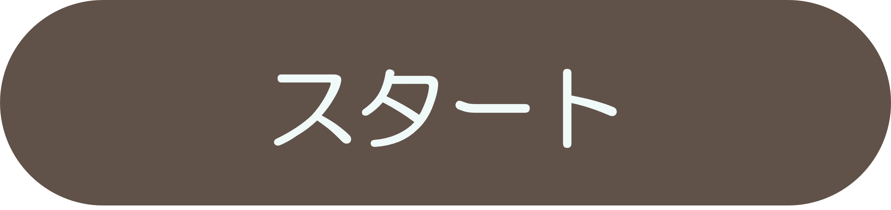
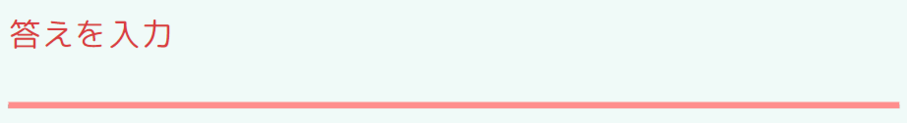
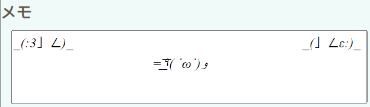
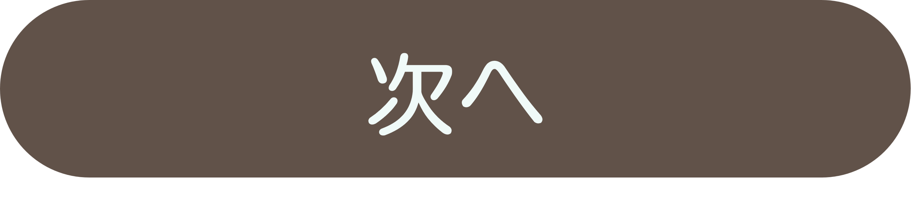

CalcuLesson
HOME
中1
中2
中3
English
中学3年生
いくつかの単元が高校数学へとつながっていきます。
中学数学全体の復習も大切です。
ここで学べる内容
因数分解
シンプルに言えば、「たし算/引き算の式を、かけ算の式にすること」です。
式の展開の対とも言えます。
いつ使うの？
後に出てくる二次方程式を解く一つの方法になります。
また、因数分解を使うことで計算の工夫ができるかもしれません。
例えば、「101×101-99×99」です。
平方根
二乗して
a
になる数が
a
の平方根です。
「ルート」という呼び方は、平方根の英語「Square Root」から来ています。
いつ使うの？
平方根というと、正方形の一辺の長さをイメージする人も多いでしょう。
それ以外にも、よく使われるA4用紙やB5用紙は、縦横比が1: √2になるよう作られています。
二次方程式
最高の次数が2の方程式のことです。
ax
2
+bx+c=0
の形で表されます。
いつ使うの？
中学1年生で習った一次方程式だけではわからない数もたくさんあります。
この学年で習う「関数
y=ax
2
」や、高校数学Iで習う二次関数と組み合わせれば、さらに応用の種類が増えていくはずです。
関数
y=ax
2
y
が
x
の2乗に比例する関数です。
この関数のグラフは、放物線といわれる曲線になります。
いつ使うの？
放物線はその名の通り、投げられた物体の動きを表します。
電波を受信するパラボラアンテナにも、放物線が使われています。
また、この単元を学ぶことで、高校で習う二次関数の基礎を抑えることができます。
スタート
遊び方
好きな学年を選んでね
「スタート」ボタンを押すとゲームが始まるよ

出てきた問題の答えを
半角英数字
で書こう！

必要に応じてメモ欄を使ってね

答えを書けたら「次へ」！

全ての問題を解いたらスコアが出るよ！
めざせハイスコア！